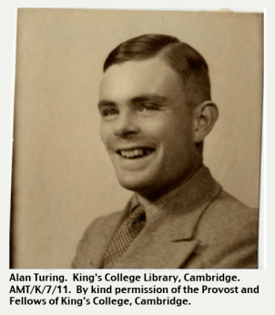
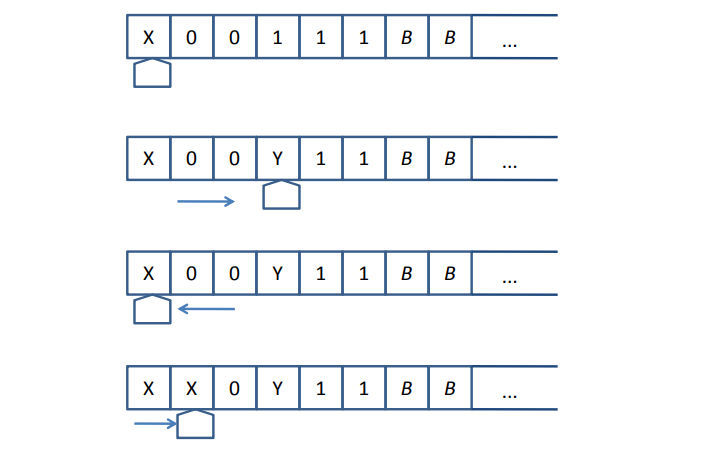

Mesin Turing adalah model yang sangat sederhana dari komputer. Secara esensial, mesin Turing adalah sebuah finite automaton yang miliki sebuah tape tunggal dengan panjang tak terhingga yang dapat membaca dan menulis data.
Mesin Turing adalah tidak dimaksudkan sebagai teknologi komputasi praktis,melainkan sebagai eksperimen pemikiran yang mewakili mesin komputasi. Mesin Turingmembantu para ilmuwan komputer memahami batas-batas perhitungan mekanik.
Sejarah Mesin Turing
Pada 1930, Alan mampu memberikan ide tentang komputer digital untuk pemecahan berbagai masalah. Ide itu diwujudkan dengan menciptakan mesin turing (turing machine) yang akan menjadi cikal bakal komputer modern.
Mesin turing ini mewujudkan prinsip esensial komputer. Karyanya memperkenalkan sebuah konsep signifikansi praktis yang sangat besar. Komputasi sendiri pertama kali dianggap sebagai model kognisi sejak ditemukannya arsitektur standar komputer yang dipakai sampai sekarang. Bahkan, dalam buku The History of Psychology yang ditulis oleh George Boerre, Alan mampu menciptakan konsep-konsep ilmu komputer di luar imajinasinya.
Mesin turing buatan Alan adalah sebuah alat pengubah dan manipulasi basic simbol abstract. Karena kesederhanaanya, mesin turing dapat diadaptasikan untuk melakukan simulasi logika yang dapat dibangun oleh berbagai computer. Akan tetapi, mesin turing tidak terbatas pada operasi push dan pop ketika mengakses media penyimpanannya. Sejak saat itu, mesin turing merupakan ibu dari semua komputer yang ada saat ini

Notasi Mesin Turing
Sebuah mesin Turing M dilambangkan dengan notasi formal sebagai berikut:
M = (Q, Σ, Γ, δ, q0, B, F)
Keterangan :
Q = the set of internal states
Σ = the input symbol
Γ = a finite set of symbols called the tape symbols
δ = the transaction function
q0 = initial state
B = the blank symbols
F = set of final or accepting state
Keadaan sebuah Mesin Turing setiap saat dicirikan oleh tiga hal:
1. Status sekarang (q)
2. Simbol yang sedang diterima/dibaca
3. Posisi head (“nomor sel” yang sedang dibaca) pada pita
Cara Kerja Mesin Turing
Perilaku mesin Turing bergantung pada simbol masukan yang berada pada posisi head baca/tulis dan status dari Finite Control.
Dalam setiap gerakannya gerakannya, mesin Turing dapat melakukan melakukan salah satu dari aksi berikut:
1. Berubah status.
2. Menuliskan simbol pada pita masukan. Aksi penulisan ini mengubah simbol yang sebelumnya berada pada sel tsb.
3. Menggerakkan head ke kiri atau ke kanan.
sumber :
https://informatika.stei.itb.ac.id/~rinaldi.munir/TeoriKomputasi/2014-2015/IF5110%20-%20Mesin%20Turing%20(Bagian%201).pdf
https://dokumen.tips/documents/mesin-turing-55b4f929aa31b.html
Model Mesin Turing
Sebuah mesin Turing terdiri dari komponen-komponen :
1. Pengendali berhingga (finite control)
2. Pita masukan dengan sifat:
- panjangnya tidak berhingga (ujung kiri terbatas terbatas, ujung kanan tidak terbatas terbatas) - dapat dibaca maupun ditulis
- sel yang tidak berisi simbol masukan akan berisi simbol kosong (blank = B)
Pada keadaan awal, n sel pertama dari pita masukan berisi rangkaian simbol yang harus dikenali (dinyatakan sebagai a 1, a 2, …, a n). Sel di sebelah kanan rangkaian simbol berisi B.
Contoh Mesin Turing

1. Jika pada saat bergerak ke kanan untuk mencari ‘1’ , mesin Turing M menjumpai simbol B, maka berarti banyaknya ‘0’ lebih dari banyaknya ‘1’. Kesimpulannya, string masukan tidak dikenali.
2. Jika pada saat bergerak ke kiri M tidak menjumpai lagi ‘0’, maka M memeriksa memeriksa apakah masih ada ‘1’. Bila habis maka string diterima (dikenali).
3. Jika sebuah string diterima (dikenali), maka mesin Turing M berhenti. Untuk string yang tidak dikenali (ditolak) ada kemungkinan M tidak berhenti (looping).
Contoh: String masukan adalah 000111

Kesimpulan: string ‘000111’ dikenali oleh mesin M.